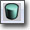
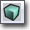
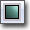
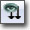
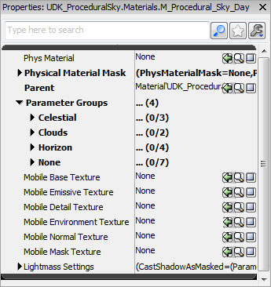
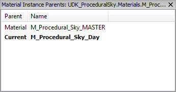
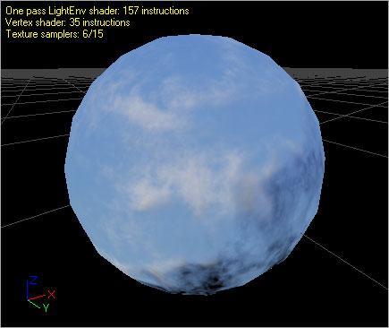

UDN
Search public documentation:
MaterialInstanceEditorUserGuide
日本語訳
中国翻译
한국어
Interested in the Unreal Engine?
Visit the Unreal Technology site.
Looking for jobs and company info?
Check out the Epic games site.
Questions about support via UDN?
Contact the UDN Staff
中国翻译
한국어
Interested in the Unreal Engine?
Visit the Unreal Technology site.
Looking for jobs and company info?
Check out the Epic games site.
Questions about support via UDN?
Contact the UDN Staff
UE3 Home > Unreal Editor and Tools > Material Instance Editor User Guide
UE3 Home > Materials & Textures > Material Instance Editor User Guide
UE3 Home > Materials & Textures > Material Instance Editor User Guide
Material Instance Editor User Guide
Overview
Opening the Material Instance Editor
Material Instance Editor Interface
- Menu Bar
- Toolbar
- Properties Pane - Properties of the material instance.
- Parent List - A list of the chain of parents for the current material instance.
- Preview Pane - Previews the current material instance.
Menu Bar
Window
- Properties - Toggles display of the Properties Pane.
- Material Instance Parents - Toggles display of the Parent List.
Tool Bar
| Icon | Description |
|---|---|
| Toggles the background grid in the material instance preview pane. | |
|    | Select from the standard shapes upon which to preview your material instance. |
| Opens the Content Browser and selects the material instance. | |
| Select a static mesh in the Conent Browser and press this button to make the selected mesh the preview mesh. | |
| If enabled, update the material on the preview mesh in realtime. Disable this flag for editor performance. | |
|  | Makes all material parameters in the parent material visible in the Properties Pane. |
Properties Pane
 The property window in the material instance editor is where all of the ‘work’ should take place. Through the property window, material instance parameters can be overridden and changed. Each parameter that exists in the parent material for this material instance is listed in the Parameter Groups array under the group assigned to the parameter in the parent material. By default, none of the parent's parameters values are overridden. In addition to parameters, The PhysicalMaterial and physical material mask properties can be assigned in the Properties Pane as well as several of the mobile-specific properties and Lightmass settings.Parent List
 Since Material Instances can have other Material Instances as their parent, sometimes its difficult to find the original Material that the Material Instance is based off of. The parent list solves that problem by displaying the chain of parents of the current Material Instance all the way up to the root Material that is the start of the chain. For example, The parent list displayed above shows a Material Instance named "TestMaterial_INST_INST" that has the Material Instance "TestMaterial_INST" as its parent. We can see in the parent list that "TestMaterial_INST" has "TestMaterial" as its parent. The instance currently being edited is shown in bold. Furthermore, by double-clicking on any of the items in the parent list, the editor for that parent will be launched. Parents can also be located in the generic browser by right-clicking on the parent's item and then choosing "Sync Generic Browser".Preview Pane
 The material preview pane displays the material being edited applied to a mesh. Rotate the mesh by dragging with the left mouse button. Pan by dragging with the middle mouse button, and zoom by dragging with the right mouse button. Rotate the light direction by holding down L and dragging with the left mouse button. The preview mesh can be changed by using the associated toolbar controls (the shape buttons, "Select Preview Mesh" combo, and "Use Selected StaticMesh" button). The preview mesh is saved with the material so that the next time the material is opened in a material editor, it will be previewed on the same mesh. The Preview Pane of the Material Instance Editor also displays statistics about the material, such as instruction counts for the various shader types as well as the number of texture samples being used by the material.Creating Instances
Overriding Parameters
Workflow
Artist Workflow
The most common usage case for artist of this editor would be something like this:- Artist creates new material with parameters to alter the appearance.
- Artist creates a new material instance constant in a package by right clicking in the GB.
- Artist assigns previously created material as the parent of the new material instance constant
- Artist modifies material instance parameters to change the way the material looks.
- Artist and LDs can now use the new material instance constant throughout the editor.
Level Designer Workflow
The most common usage case for LDs of this editor would be something like this:- Artist creates new material with parameters to alter the appearance.
- LDs place the material throughout the level.
- LD feels that the material needs to be tweaked and creates a new material instance by right clicking on the actor and using the menu option described above.
- LD checks the box next to the instance parameter they want to replace and modifies the look of the material.
- (Optional) Since material instances created this way are stored in the level package, the LD can optionally apply the material instance that was created to other actors. The material instance will appear in the level package in the generic browser.